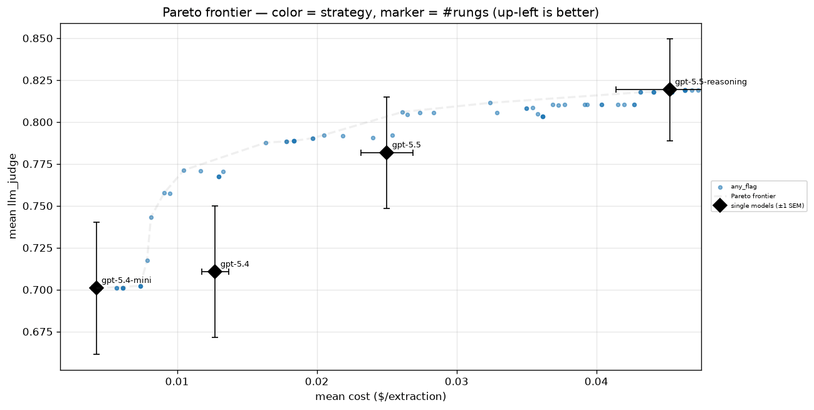

SDE 级联
使用两级结构化数据提取级联（mini → 验证 → 推理），以极低的成本获得大型推理模型的大部分质量。
概述
大型推理模型擅长提取结构化数据，但速度慢且成本高
小模型便宜，但会犯错
级联能以极低成本获得大部分质量
我们使用的模型及其价格（每 100 万 token 的美元数，输入 / 输出；标准费率核对于 2026 年 9 月 15 日）：
第 0 级（mini）：
gpt-5.4-mini，价格 \$0.75 / \$4.50第 1 级（推理）：
gpt-5.5，价格 \$5.00 / \$30.00（约为 mini 的 7 倍）验证器：TypeSafe
jev-1.12，价格 \$0.042 / \$0.00（输出 token 免费；已公布的 Jev 定价）
算法
使用便宜/小型模型进行提取。
使用 TypeSafe 原语进行验证：逐字段的"是/否"（"Noul 问题"）问题
（例如"该值在源文本中是否缺失？"、"它是否是从无关文本中搬来的？"），每个问题都返回 P(有问题)。
如果验证器信号触发，则升级到昂贵的推理模型；否则保留便宜的答案。
本实战指南
完整走一遍一个真实示例，然后展示跨 100 个提示词的权衡
注意：两个提取层级使用 OpenAI 的文本模式
我们不使用结构化输出、工具调用或 json 模式，原因是：
模式遵循类错误并不是我们预期 LLM 会犯的那种错误（为此制造合成数据很容易）
如果 LLM 确实没能遵循 schema，那几乎总是意味着它非常混乱，所以受限解码解决不了底层问题
不过我们鼓励你亲自试试它们！
设置
安装依赖（TypeSafe 验证器客户端由 TypeSafe 的包索引提供）：
pip install openai datasets jsonschema ipython "typesafe-sdk>=0.5.7" cooksafe --extra-index-url https://pypi.typesafe.ai/然后在你的环境中设置
OPENAI_API_KEY和TYPESAFE_API_KEY
import json
import os
from pathlib import Path
import jsonschema
from cooksafe import JsonCache, make_playground_link
from datasets import load_dataset
from IPython.display import Markdown, display
from openai import OpenAI
from typesafe_sdk import Noul, NoulCriteria, TypeSafeClient
MINI = "gpt-5.4-mini" # rung 0: cheap + fast
REASONING = "gpt-5.5" # rung 1: strong, run with reasoning_effort="high"
TS_MODEL = "jev-1.12" # the TypeSafe verifier model
FIRE_T = 0.7 # escalate if any per-field P(wrong) exceeds this; also the "<== FIRES" display marker
oai = OpenAI()
ts = TypeSafeClient(api_key=os.environ["TYPESAFE_API_KEY"], timeout=30.0)第 1 步：数据
我们选择一个名为 scrapegraphai 的 huggingface 数据集
SCRAPEGRAPHAI_REVISION = "4bb9fba1dff9181c5acdb60a5a26fea62fa54fe9"
row = load_dataset(
"scrapegraphai/scrapegraphai-100k",
revision=SCRAPEGRAPHAI_REVISION,
split="train",
)[516]
schema = json.loads(row["schema"])
prompt = row["prompt"]
content = row["content"]
print(
f"""
PROMPT
===========
{prompt}
SCHEMA
===========
{json.dumps(schema, indent=2)}
CONTENT
===========
{content}
""".strip()
)PROMPT
===========
Find registration open date fall semester for New York University in New York, NY for the 2024-2025 school year.
SCHEMA
===========
{
"properties": {
"registration_open_date": {
"description": "The date that registration opens for the fall semester. MUST be in the format mm/dd/yyyy. For example, for a college in the 2024-2025 school year, it might be something like 09/05/2024. Return a blank string if you are unsure.",
"title": "Registration Open Date",
"type": "string"
},
"description": {
"description": "A brief description of the registration open date. For example, 'Registration opens for the fall semester'.",
"title": "Description",
"type": "string"
}
},
"required": [
"registration_open_date",
"description"
],
"title": "RegistrationOpen",
"type": "object"
}
CONTENT
===========
Skip to content Skip to current page navigation
[ ](https://www.nyu.edu/)
Search Site
[ ](https://www.nyu.edu/)
* [ Academics](https://www.nyu.edu/academics.html)
* [ Admissions](https://www.nyu.edu/admissions.html)
* [ Research](https://www.nyu.edu/research.html)
* [ University Life](https://www.nyu.edu/life.html)
* [ About](https://www.nyu.edu/about.html)
All NYU
# Mobile Navigation
[ ](https://www.nyu.edu/)
Search Site
* [Academics](https://www.nyu.edu/academics.html)
* [Admissions](https://www.nyu.edu/admissions.html)
* [Research](https://www.nyu.edu/research.html)
* [University Life](https://www.nyu.edu/life.html)
* [About](https://www.nyu.edu/about.html)
All NYU
Info for
* Back to main menu
* Info for
* [Students](https://www.nyu.edu/students.html)
* [Faculty](https://www.nyu.edu/faculty.html)
* [Alumni](https://www.nyu.edu/alumni.html)
* [Employees](https://www.nyu.edu/employees.html)
* [Community](https://www.nyu.edu/community.html)
[Log In](http://home.nyu.edu/)
Info for
* [Students](https://www.nyu.edu/students.html)
* [Faculty](https://www.nyu.edu/faculty.html)
* [Alumni](https://www.nyu.edu/alumni.html)
* [Employees](https://www.nyu.edu/employees.html)
* [Community](https://www.nyu.edu/community.html)
[Log In](https://home.nyu.edu/)
Search Site Search
# Events Calendar
Search Events
Apply Reset
* [About the Events Calendar ](https://www.nyu.edu/employees/resources-and-services/media-and-communications/digital-communications/university-events-calendar.html)
* [Events Calendar Tutorial ](https://www.nyu.edu/employees/resources-and-services/media-and-communications/digital-communications/university-events-calendar/tutorials.html)
* [Report issue or provide feedback ](https://nyu.service-now.com/sp?id=sc_cat_item&sys_id=7698dd2a98bcf4004c8c03063d84e274)
Search Filters Calendar
New York University
Equal Opportunity and Non-Discrimination at NYU - New York University is committed to maintaining an environment that encourages and fosters respect for individual values and appropriate conduct among all persons. In all University spaces--physical and digital--programming, activities, and events are carried out in accordance with applicable law as well as University policy, which includes but is not limited to its Non-Discrimination and Anti-Harassment Policy.
Unless otherwise noted, all content copyright New York University. All rights reserved.
* [Search](https://search.nyu.edu/)
* [Campus Map](https://www.nyu.edu/map.html)
* [Events](https://events.nyu.edu/)
* [Contact Us](https://www.nyu.edu/contact-us.html)
* [Give](https://www.nyu.edu/about/giving.html)
* [Copyright & Fair Use](https://www.nyu.edu/copyright-and-fair-use.html)
* [Privacy](https://www.nyu.edu/privacy.html)
* [Accessibility](https://www.nyu.edu/accessibility.html)
* [Feedback](https://www.nyu.edu/#feedback.html)
* [New York Campus](https://www.nyu.edu/)
* [Abu Dhabi Campus](https://nyuad.nyu.edu/)
* [Shanghai Campus](https://shanghai.nyu.edu/)
* [](https://facebook.com/)
* [](https://linkedin.com/)
* [](https://x.com/)
* [](https://instagram.com/)
* [](https://youtube.com/)这一行是一个 NYU 活动日历页面（"Fall 2024 Census Date"）：
schema 只要求两个字段：
registration_open_date和description抓取得到的提示词只包含日历导航和样板文字：没有注册日期，也没有描述
注意 schema 的
description字段甚至在它自己的字段描述里自带一个示例值（"Registration opens for the fall semester"）
因此，一个行为良好的提取器应该拒绝编造页面中不存在的字段
看看小模型会不会做正确的事吧！
第 2 步：用 mini 模型提取（文本模式）
注意：
gpt-5.4-mini在这个输入上非常随机——即使在temperature=0下，它几乎每次运行都会编造一个不同的description。为了让这篇演练可复现，我们硬编码了本笔记本其余部分要解释的那一次典型编造（验证器以 P(wrong) > 0.8 标记了它）。真实的流水线会直接调用extract(MINI, prompt, schema, content, temperature=0)。
EXTRACT_SYSTEM = (
"You extract structured data from documents. Return only values supported by the text. "
"Follow any value format specified by the schema or its field descriptions."
)
# LLM and TypeSafe calls are cached to ``json_cache.json``, which ships with the cookbook, so
# re-rendering reproduces the published results with no API spend; delete the file to re-run live.
json_cache = JsonCache(Path("json_cache.json"))
@json_cache
def extract(
model: str,
prompt: str,
schema: dict,
content: str,
*,
reasoning_effort: str | None = None,
temperature: float | None = None,
) -> dict:
user = (
f"{prompt}\n\nReturn ONLY a JSON object matching this JSON Schema:\n"
f"{json.dumps(schema, indent=2)}\n\nDocument:\n{content}"
)
kwargs = {
"model": model,
"messages": [
{"role": "system", "content": EXTRACT_SYSTEM},
{"role": "user", "content": user},
],
}
if reasoning_effort:
kwargs["reasoning_effort"] = reasoning_effort
if temperature is not None:
kwargs["temperature"] = temperature
text = oai.chat.completions.create(**kwargs).choices[0].message.content
# The prompt asks for ONLY a JSON object, so parse the reply as-is -- no regex fishing a
# substring out of a malformed reply. If ``json.loads`` fails, treat it as an empty extraction
# (the record-level analog of NaN): every field reads as absent, which the verifier flags and the
# gate escalates -- the safe direction. Schema-following errors are rare here (see the overview).
try:
return json.loads(text)
except (ValueError, json.JSONDecodeError):
return {}
# Hard-coded canonical fabrication (see note above); a real pipeline would use extract(MINI, prompt, schema, content, temperature=0).
mini_record = {
"registration_open_date": "",
"description": "Registration opens for the fall semester",
}
print("mini extraction:\n", json.dumps(mini_record, indent=2))
# The record is a perfect fit for the JSON Schema -- and still wrong. Schema validation is necessary
# but not sufficient: it catches structural errors, never semantic ones. That gap is the whole point.
print("\nschema-valid:", jsonschema.Draft202012Validator(schema).is_valid(mini_record))mini extraction:
{
"registration_open_date": "",
"description": "Registration opens for the fall semester"
}
schema-valid: True这条记录是 schema 有效的（上一行打印
True），但它是错的：registration_open_date留空，这与页面相符：页面没有给出任何日期但
description是编造的：页面从未描述过注册日期，于是 mini 编造了一个看似合理的值。它可能照搬 schema 自己的示例"Registration opens for the fall semester"，或者叙述"...was not found in the document"JSON-Schema 检查看不到这一点。便宜的模型会产生这种自信且满足 schema 的编造，而抓住它们正是语义验证器的职责
第 3 步：用 TypeSafe 验证
验证器是 TypeSafe；我们为每个字段构建一个
Noul问题：一个狭窄的是/否问题，框架设定为
true= 有问题（升级）
TypeSafe 在一次 system_one 调用中为每个问题返回经过校准的
noul=P(true)问题集：
一个整体性的
__overall__::judge头（"这条记录该升级吗？"）。我们计算并展示它，是为了把整条记录的判断与逐字段头作对比，但第 4 步的门控并不使用它——升级由逐字段问题组驱动。一组逐字段问题
非空字段获得完整的头集合
空字段（null / "" / []）只获得
absence_wrong头
（完整流水线还有一个针对整体容器的
spurious头和一个整体difficulty分数；此处未展示，以便这篇演练只聚焦两个门控头）
TypeSafe 之道：分解
注意一切都是以程序化方式分解的，这就是 TypeSafe 的方式。
分解让每个提示词的智能最大化，并使算法可调、可解释。
# metric -> (question, NoulCriteria)
MAIN_QUESTIONS = {
"name_desc_mismatch": (
"Does the `extracted_field` fail to match the field at `path` or the `description` in the "
"`field_spec`? If the `description` is empty, judge against the `path` alone.",
NoulCriteria(
true="the `extracted_field` does not match the field name or its `description`",
false="the `extracted_field` matches the field name and `description`",
),
),
"type_mismatch": (
"Does the `extracted_field` violate the `type` declared in the `field_spec`?",
NoulCriteria(
true="the `extracted_field` violates the declared `type`",
false="the `extracted_field` conforms to the declared `type`",
),
),
"unreasonable": (
"Is the `extracted_field` one that a reasonable person would not have extracted for this "
"`field_spec`?",
NoulCriteria(
true="a reasonable person would not have extracted this value",
false="the extraction is reasonable",
),
),
"hallucinated": (
"Is the `extracted_field` unsupported by, or absent from, the source text?",
NoulCriteria(
true="the `extracted_field` is a hallucination -- not supported by, or absent "
"from, the source text",
false="the `extracted_field` is supported by the source text",
),
),
"off_target": (
"Does the source text fail to genuinely report the thing the `field_spec` describes, so the "
"value was pulled from incidental text?",
NoulCriteria(
true="the source does not genuinely provide this field -- the value was pulled "
"from incidental text",
false="the source genuinely reports this field",
),
),
"incomplete": (
"Does the `extracted_field` fail to capture a value the source supports (note whether the "
"`field_spec` is `required`)?",
NoulCriteria(
true="the field is wrongly empty, null, or missing a value the source supports",
false="the field captures the value the source supports",
),
),
"format_violation": (
"Does the `extracted_field` violate the format or constraints implied by the `description`, "
"the schema `type`, and the extraction instructions (e.g. date format, units, enum membership)?",
NoulCriteria(
true="the `extracted_field` violates the implied format or constraints",
false="the `extracted_field` satisfies the format and constraints",
),
),
}
ABSENCE_QUESTION = (
"The `extracted_field` is empty, null, or an empty collection. Does the source text contain the "
"information the `field_spec` describes, making the empty result wrong?"
)
ABSENCE_CRITERIA = NoulCriteria(
true="a value was wrongly omitted", false="returning nothing is correct"
)
# The pipeline also asks one holistic, whole-record head: "should this be escalated?"
OVERALL_JUDGE = (
"Is this extracted record an incorrect extraction -- some value unsupported by the source or "
"not conforming to the schema, required information missing or wrong, or some field hallucinated -- "
"so it should be escalated to a smarter model?"
)
OVERALL_JUDGE_CRITERIA = NoulCriteria(
true="the record is an incorrect extraction",
false="the record is a correct extraction",
)
def is_empty(v) -> bool:
return v is None or (isinstance(v, (str, list, dict)) and len(v) == 0)
def field_spec(name: str) -> dict:
"""Minimal spec pulled from the schema (unwrapping anyOf/null for optional fields)."""
p = schema["properties"][name]
branches = p.get("anyOf") or []
typ = p.get("type") or next(
(b["type"] for b in branches if b.get("type") != "null"), "unknown"
)
return {
"path": name,
"type": typ,
"description": p.get("description", ""),
"required": name in schema.get("required", []),
}
def build_questions(record: dict) -> dict[str, Noul]:
"""The verify question set: one holistic ``__overall__::judge`` head plus a per-field battery,
keyed ``field::metric`` (mirrors build_verify_prompts)."""
questions: dict[str, Noul] = {
"__overall__::judge": Noul(
instructions=OVERALL_JUDGE, criteria=OVERALL_JUDGE_CRITERIA
),
}
for name, value in record.items():
spec = field_spec(name)
if is_empty(value):
questions[f"{name}::absence_wrong"] = Noul(
instructions={
"field_spec": spec,
"extracted_field": value,
"main_question": ABSENCE_QUESTION,
},
criteria=ABSENCE_CRITERIA,
)
continue
for metric, (question, criteria) in MAIN_QUESTIONS.items():
if metric == "type_mismatch" and spec["type"] == "unknown":
continue
questions[f"{name}::{metric}"] = Noul(
instructions={
"field_spec": spec,
"extracted_field": value,
"main_question": question,
},
criteria=criteria,
)
return questions
@json_cache
def verify(record: dict) -> dict[str, float | str]:
"""Run the whole Noul battery over a record in one TypeSafe call; return ``{field::metric: P(true)}``."""
state = {
"system_message": EXTRACT_SYSTEM,
"instruction": "Extract the structured record from this document",
"source_text": row["content"],
"schema": schema,
"extraction": record,
}
questions = build_questions(record)
answers = ts.system_one(state=state, questions=questions, model=TS_MODEL).answers
return {qid: ans.noul for qid, ans in answers.items()} | {
"playground_link": make_playground_link(state, questions)
}对 mini 的提取结果运行整个问题组
checks = verify(mini_record)
playground_link = checks.pop("playground_link")
display(
Markdown(
f"🔗 [Open this verification in the TypeSafe playground]({playground_link})"
)
)
print(f"{'qid':<40}{'P(wrong)':>9}")
print("-" * 50)
for fld, p in sorted(checks.items(), key=lambda c: -c[-1]):
flag = " <== FIRES" if p > FIRE_T else ""
print(f"{fld:<40}{p:>9.2f}{flag}")qid P(wrong)
--------------------------------------------------
description::hallucinated 0.95 <== FIRES
description::off_target 0.85 <== FIRES
description::unreasonable 0.58
__overall__::judge 0.56
description::incomplete 0.16
registration_open_date::absence_wrong 0.14
description::format_violation 0.10
description::name_desc_mismatch 0.08
description::type_mismatch 0.02TypeSafe 把信号集中在真正出错的字段上。
我们的结果是校准的：在出错的字段上高，在正确的字段上低，在看起来不对劲却并未明确出错的字段上中等
这就是一个 typesafe 验证器相比直白的"这整件事好不好？"评判器能带给你的东西
第 4 步：升级门控
现在我们以
any_flag作为门控：只要任何字段标志超过FIRE_T（0.7，在上方设置，并与第 3 步的<== FIRES标记共用）就升级这是一个
max式门控（任何字段触发就升级），而不是取均值，所以一个自信的红旗就足以触发升级，不会被平均成无声
# any_flag is a per-field gate: the holistic __overall__ head is shown above but not part of it
fired = {
qid: p
for qid, p in checks.items()
if not qid.startswith("__overall__") and p > FIRE_T
}
escalate = bool(fired)
print(
f"any_flag gate (threshold {FIRE_T}): {'ESCALATE' if escalate else 'ACCEPT cheap result'}"
)
for qid, p in sorted(fired.items(), key=lambda c: -c[1]):
print(f" fired: {qid} (P={p:.2f})")any_flag gate (threshold 0.7): ESCALATE
fired: description::hallucinated (P=0.95)
fired: description::off_target (P=0.85)第 5 步：升级到推理模型
既然有信号触发，我们就为强模型（gpt-5.5，reasoning_effort="high"）付费
final_record = (
extract(REASONING, prompt, schema, content, reasoning_effort="high")
if escalate
else mini_record
)
print("mini :", json.dumps(mini_record))
print("reasoning :", json.dumps(final_record))
print("\nfield-level diff (mini -> final):")
for name in mini_record:
if mini_record[name] != final_record.get(name):
print(f" {name}: {mini_record[name]!r} -> {final_record.get(name)!r}")mini : {"registration_open_date": "", "description": "Registration opens for the fall semester"}
reasoning : {"description": "", "registration_open_date": ""}
field-level diff (mini -> final):
description: 'Registration opens for the fall semester' -> ''改进之处
推理模型丢弃了编造的
description，返回""它识别出页面从未描述注册日期，并拒绝编造一个
级联把一个自信且满足 schema 的编造变成了一个诚实的空字段
而它只在这一个条目上花了推理模型的钱，正是因为验证器让它这么做的
第 6 步：在 100 个提示词上的表现
这些是 TypeSafe 的内部结果，用上述通用方法得出：
同样的
extract → verify → escalate循环，gpt-5.4-mini → gpt-5.5-reasoning，作用于逐字段头之上的any_flag门控，在 100 个 scrapegraphai 提示词上运行每个条目的便宜层级提取由 TypeSafe 打分；门控阈值（"cut"）从 0 扫到 1，得到的每个配置都绘制在（成本，质量）空间中
该图是历史快照；其成本并未按上面列出的当前 Jev 费率重新计算

如何解读：
黑色菱形 = 四个模型各自单独运行（成本随能力攀升；最强的
gpt-5.5-reasoning位于右上角，质量约 0.81，成本约 \$0.10/次提取）蓝色点 = 处于许多门控阈值上的级联；虚线是 pareto 前沿
级联前沿位于每个单一模型的左上方：扫动门控就能以顶级模型的一小部分成本获得其大部分质量
便宜层级近乎免费地处理容易的条目，只有被标记的条目才为推理模型付费
附录 A：什么造就一个好的验证器信号
级联的好坏取决于其验证器；区分有用信号与无用信号的是：
狭窄且有据。
针对一个字段、对照源文本的一个可检验的是/否问题（例如"该值在源文本中是否缺失？"），而不是模糊的"这次提取好吗？"
模糊的问题给出糊状、未校准的分数
坏 = TRUE，并附有明确判据。
将每个问题的框架设定为升级情形对应
true情形，并说明true/false各自的含义
逐字段，然后用
max聚合。逐字段标志可以定位错误，并保持稀疏而有力
max（"任何标志触发"）确保一个自信的红旗就能触发升级，而不是被平均成无声
独立且便宜。
由专门的验证器（这里是 TypeSafe）评判输出，能抓住提取器自身的盲点
它必须便宜，否则就无节省可言
有区分度 / 已校准。
好的信号在真实错误上高、在正确结果上低，因此单个阈值就能干净地分开"接受"与"升级"
正是这种区分度把 pareto 曲线推向左上方